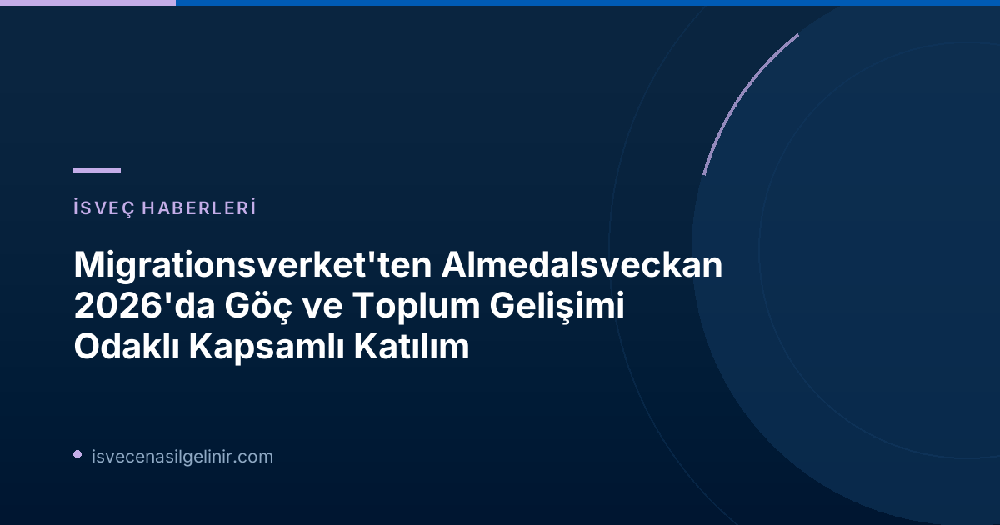

Migrationsverket'in Almedalsveckan'daki Yoğun Programı
İsveç Göçmen Dairesi (Migrationsverket), demokratik tartışmaların merkezi olan Almedalsveckan 2026 boyunca toplamda 14 program noktasına aktif olarak katılacak. Kurum, iki ayrı seminer düzenleyecek, çok sayıda harici etkinlikte yer alacak ve göç ve toplum gelişimiyle ilgili güncel konular hakkında merkezi iş birliği aktörleriyle diyaloglar gerçekleştirecek.
Kurumun Personel Dairesi Başkanı Anna Lindblad, Almedalsveckan'daki varlığın Migrationsverket'in misyonunun önemli bir parçası olduğunu vurguluyor:
"Uzman bir kurum olarak, göç konusundaki kamuoyu tartışmalarına katılmamız büyük önem taşıyor. Göç alanında kapsamlı değişiklikler yaşanıyor, özellikle de AB Göç ve İltica Paktı ile. Bu nedenle, tartışılan konulara bilgi, deneyim ve bakış açımızla katkıda bulunmamız gerekiyor."
Ele Alınacak Ana Temalar ve Gündem Maddeleri
Bu yılki Almedalsveckan'da Migrationsverket'in odaklanacağı başlıca konular şunlar:
- AB Göç ve İltica Paktı'nın İsveç'teki mülteci kabul süreçlerine etkisi ve uygulanması.
- Kamu kurumlarının artan hazırlık durumu ve acil durumlara müdahale kapasitesi.
- İşgücü piyasasında suç ve bu sorunun üstesinden gelmek için toplumsal iş birliği.
- Göç süreçlerinde yapay zekanın (AI) rolü ve stratejileri.
- LGBTİ+ bireylerin sığınma başvurusu süreçleri ve bu konudaki özel hassasiyetler.
İsveç'teki göçmenlik süreçleri, oturum izinleri ve vatandaşlık başvurularıyla ilgili daha detaylı ve güncel bilgilere ulaşmak için sverigemedborgarskapsprov.com adresini ziyaret ederek uzman kaynaklardan faydalanabilirsiniz.
Migrationsverket'in Seminer ve Katılım Programı
Migrationsverket'in Almedalsveckan 2026'da yer alacağı bazı önemli program noktaları aşağıda detaylandırılmıştır:
| Tarih & Saat | Konu Başlığı | Düzenleyici(ler) | Yer | Önemli Katılımcılar |
|---|---|---|---|---|
| Salı 13.30–14.30 | AB Göç ve İltica Paktı İsveç Mülteci Kabulünü Nasıl Etkiliyor? | Migrationsverket | S:t Hansgatan 21, Almedalsarenan | Veronika Lindstrand Kant, Johanna Ó Duinnín, Karin Ödquist Drackner, Maria Mindhammar, Jesper Tengroth |
| Salı 15.00–16.00 | Farklı Toplumsal Aktörler Gönüllü Geri Dönüş İçin Nasıl Birlikte Çalışabilir? | Migrationsverket ve Gönüllü Geri Dönüş için Ulusal Koordinatör | S:t Hansgatan 21, Almedalsarenan | Teresa Zetterblad, Petra Lindh, Bilal Almobarak, Åsa Simonsson, Katarina Gentzel Sandberg |
| Salı 14.00–14.30 | Zorunlu ama Esnek – AB'nin Dayanışma Modeli İsveç'i Nasıl Etkiliyor? | Göç Araştırmaları Delegasyonu (Delmi) | Hamnplan, yer 221 | Jenny Bergsten, Bernd Parusel, Charlotte Marie |
| Salı 17.00–18.00 | Zor Durumda Liderlik Etmek – Devlet İşverenleri Yüksek Hazırlığa Hazır mı? | Arbetsgivarverket | Korsgatan 4, Länsstyrelsen's Teras | Charlotte Petri Gornitzka, Maria Mindhammar, Johan Kuylenstierna, Susanne Thedéen, Robert Egnell, Jens Mattsson, Ann Lindberg, Johan Norrman, Ann Follin |
| Çarşamba 10.45–11.45 | İnisiyatiften Hızlandırılmış Yeteneğe – Kamu Sektörü Kalıcı Bir Yapay Zeka Stratejisi Nasıl Oluşturur? | CGI | Birgers gränd 7, Almedalen girişli bahçe | Cecilia Elb, Christian Dahlgren, Ingrid Halvorsen, Johan Magnusson, Stefan Andersson |
| Çarşamba 09.00–10.15 | İş Yaşamı Suçları İsveç'in En Az Değer Verilen Sorunu mu – İsveç İş Piyasasını Kim Yönetiyor? | Södertörns Yüksek Okulu ve Organize Suçlara Karşı İsveç (SMOB) | Skeppsbron 24, Joda Bar och Kök | Maria Mindhammar, Jonas Andé, Birgitta Pettersson, Tomas Andersson, Carina Lindfelt, Mattias Schulstad, Lars Lööw |
| Perşembe 11.15–11.45 | Cinsel Yönelim, Cinsiyet Kimliği ve Cinsiyet İfadesini Sığınma Sebebi Olarak Belirten Kişilerin Sığınma Başvurularının İncelenmesi | Göç Araştırmaları Delegasyonu (Delmi) | Hamnplan, yer 221 | Anna Hammarstedt, Lovise Brade, Anna Lindblad |
Neden Almedalsveckan Migrationsverket İçin Bu Kadar Önemli?
Migrationsverket için Almedalsveckan, yalnızca bir etkinlik katılımından öte, kurumun stratejik hedefleri doğrultusunda hayati bir platform sunmaktadır. İsveç'in en büyük siyasi buluşma noktalarından biri olarak, Almedalsveckan Migrationsverket'e şu imkanları sağlar:
- Kamuoyunda Bilgi Paylaşımı ve Diyalog: Göçmenlik konularının karmaşıklığı göz önüne alındığında, doğru bilgiyi birinci elden sunmak ve farklı paydaşlarla açık diyalog kurmak kritik öneme sahiptir. Kurum, kamuoyunu bilgilendirerek yanlış anlamaları gidermeyi ve toplumsal bütünleşmeye katkıda bulunmayı hedefler.
- Göç Alanındaki Büyük Değişimlere Katkı Sağlama: AB Göç ve İltica Paktı gibi önemli yasal düzenlemelerin yürürlüğe girmesiyle birlikte, göçmenlik politikaları büyük bir dönüşüm geçirmektedir. Migrationsverket, bu süreçte uzman bakış açısını sunarak politikaların şekillenmesine ve daha etkin uygulanmasına katkıda bulunur.
- Deneyim ve Perspektif Sunma: Yılların deneyimine sahip bir kurum olarak Migrationsverket, sahadaki pratik uygulamalar, karşılaşılan zorluklar ve başarı hikayeleri hakkında önemli perspektifler sunar. Bu, politika yapıcıların ve diğer aktörlerin daha bilinçli kararlar almasına yardımcı olur.
- Ağ Oluşturma ve İş Birliği: Almedalsveckan, diğer devlet kurumları, sivil toplum kuruluşları, araştırmacılar ve siyasi temsilcilerle bir araya gelmek için eşsiz bir fırsattır. Bu platformda kurulan ağlar ve iş birlikleri, göçmenlik alanındaki sorunlara ortak çözümler üretilmesi için zemin hazırlar.
Referanslar
- Migrationsverket Resmi Duyurusu: Migrationsverkets medverkan under Almedalsveckan 2026
- İsveç Vatandaşlık Testi Hakkında Bilgi: sverigemedborgarskapsprov.com
İsveç'e Göç ve Vatandaşlık Süreçleri Hakkında Daha Fazla Bilgi Edinin
İsveç'e taşınmak, çalışma izni almak, vatandaşlık başvurusunda bulunmak veya İsveç'teki yaşam koşulları hakkında güncel ve güvenilir bilgilere ulaşmak için kaynaklarımızı keşfedin.